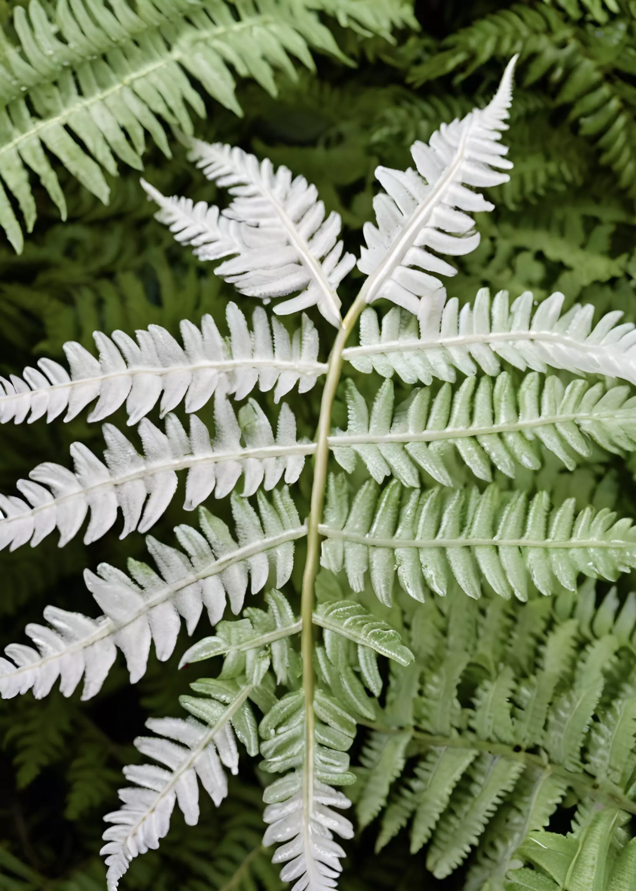
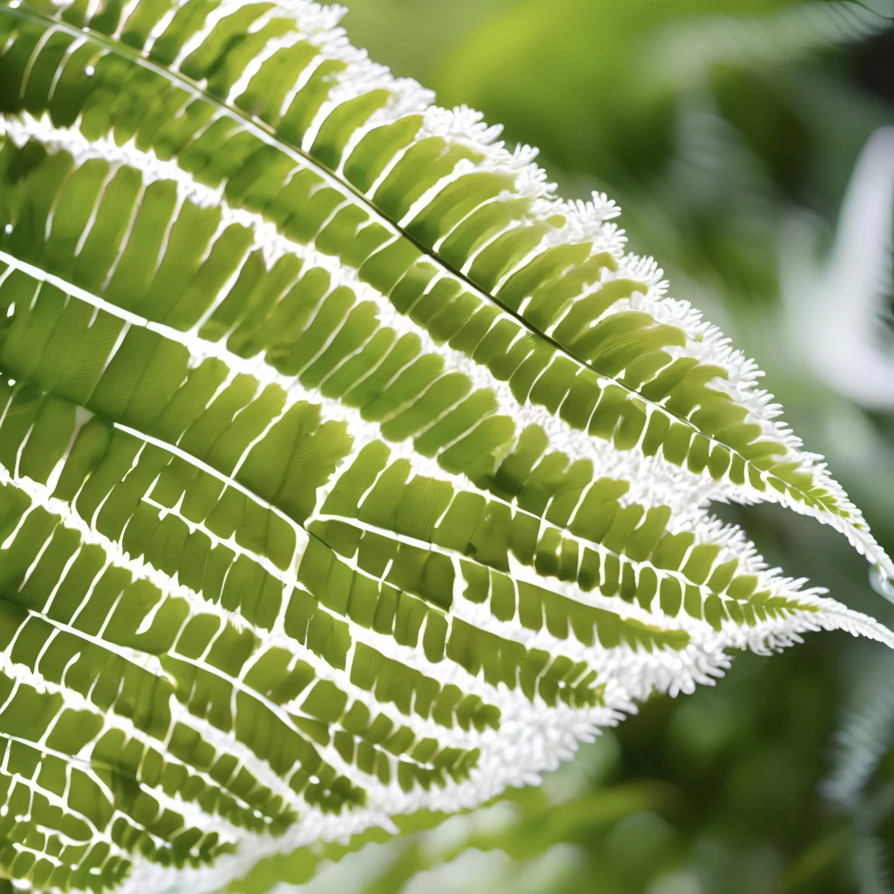
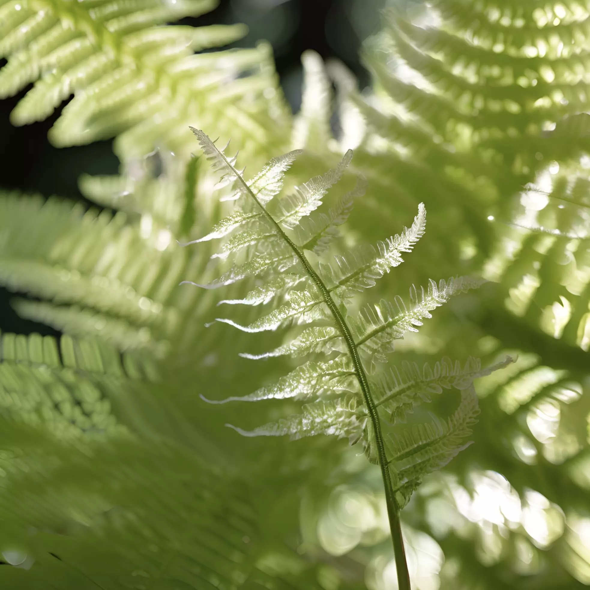
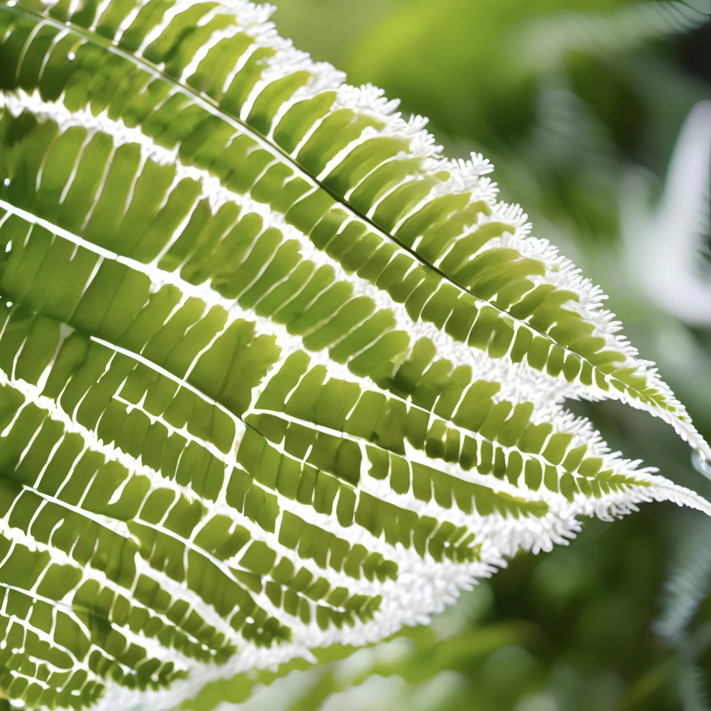
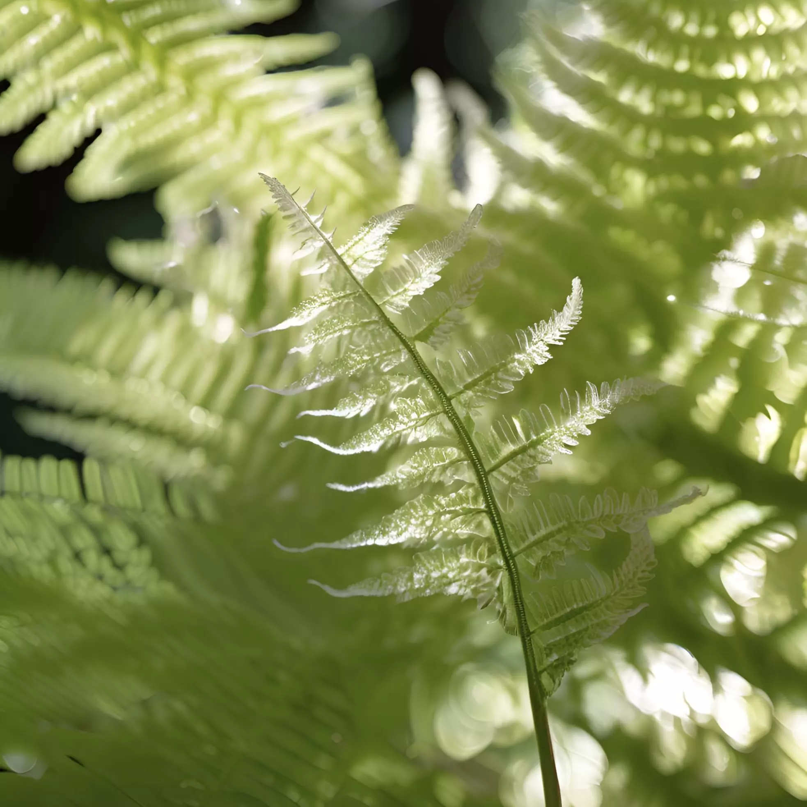

식물계 (Plantae)
└ 양치식물문 (Pteridophyta)
└ 고사리강 (Polypodiopsida)
└ 발풀고사리목 (Gleicheniales)
└ 발풀고사리과 (Gleicheniaceae)
└ 발풀고사리속 (Dicranopteris)
└ 발풀고사리 (D. linearis)
└ 양치식물문 (Pteridophyta)
└ 고사리강 (Polypodiopsida)
└ 발풀고사리목 (Gleicheniales)
└ 발풀고사리과 (Gleicheniaceae)
└ 발풀고사리속 (Dicranopteris)
└ 발풀고사리 (D. linearis)
발풀고사리는 양지바르고 건조한 숲 가장자리에서 무리 지어 자라는 상록성 양치식물로, 여러해살이풀에 속한다.
뿌리줄기는 옆으로 길게 뻗으며 갈색 털이 있고, 잎은 드문드문 난다. 진화한 발풀고사리는 잎 표면에 털 구조가
발달하여 환경 적응력이 더욱 강화되었다. 잎몸은 34회 서로 엇갈려 갈라지고 길이는 20~70cm, 폭은 3~8cm이다.
우편은 자루가 없고 긴 타원상 피침형이며 깃처럼 깊게 갈라진다. 잎 앞면은 녹색이고 윤기가 나며, 뒷면은 흰빛이
돌고 적갈색 털이 약간 있다. 잎자루는 길이 20~60cm로 자갈색이고 딱딱하며 윤기가 난다.
포자낭군은 주맥과 가장자리 사이에 한 줄로 달리고 포막은 없다. 이 식물은 한반도 남부지방과 제주도 등에 자생하며, 타이완, 인도네시아, 일본, 중국 등지에도 분포한다. 이 종은 뿌리줄기에 비늘조각이 없으며 잎맥이 2~4회 분기하는 특징을 가진다. 반면 풀고사리는 뿌리줄기에 비늘조각이 있으며 잎맥이 1회 Y자로 갈라지는 점에서 구별된다.
포자낭군은 주맥과 가장자리 사이에 한 줄로 달리고 포막은 없다. 이 식물은 한반도 남부지방과 제주도 등에 자생하며, 타이완, 인도네시아, 일본, 중국 등지에도 분포한다. 이 종은 뿌리줄기에 비늘조각이 없으며 잎맥이 2~4회 분기하는 특징을 가진다. 반면 풀고사리는 뿌리줄기에 비늘조각이 있으며 잎맥이 1회 Y자로 갈라지는 점에서 구별된다.
 


